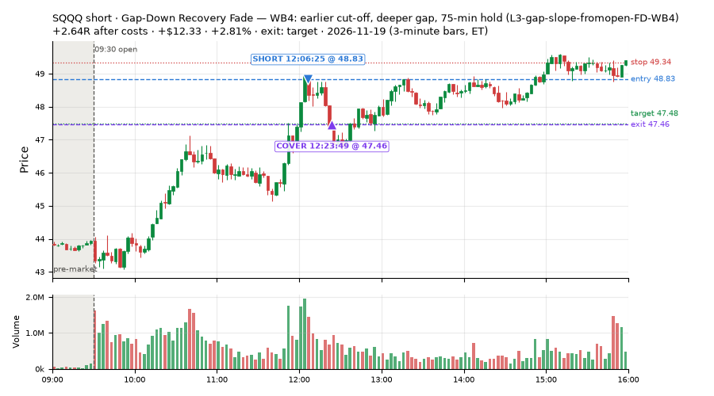
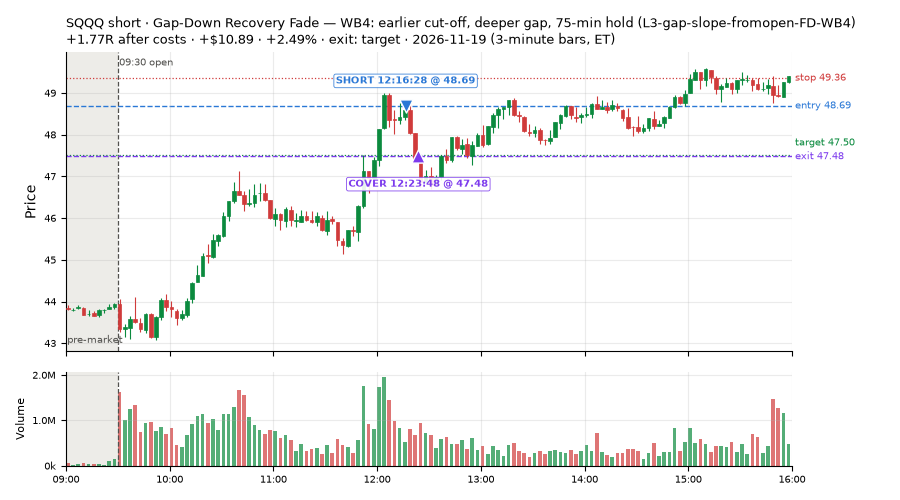
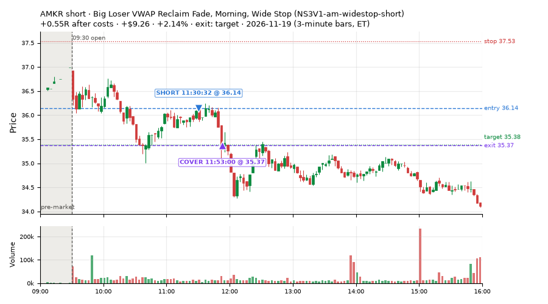
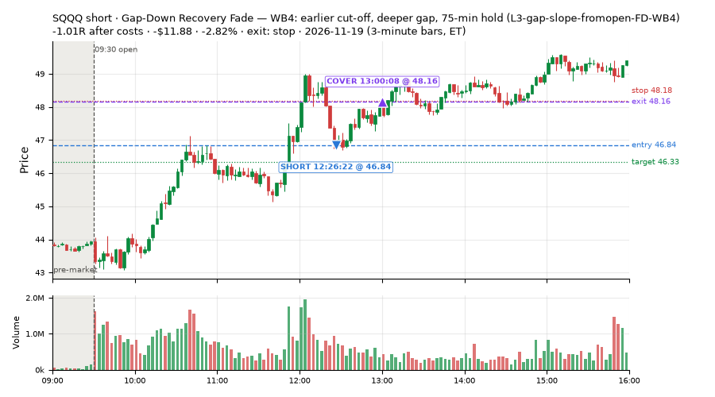
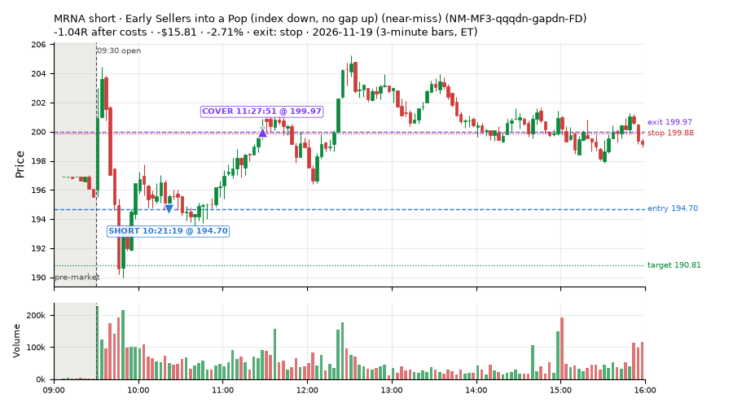
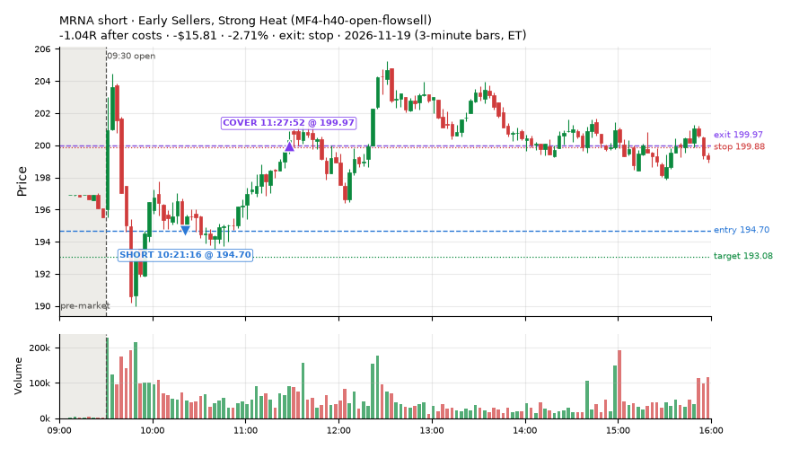
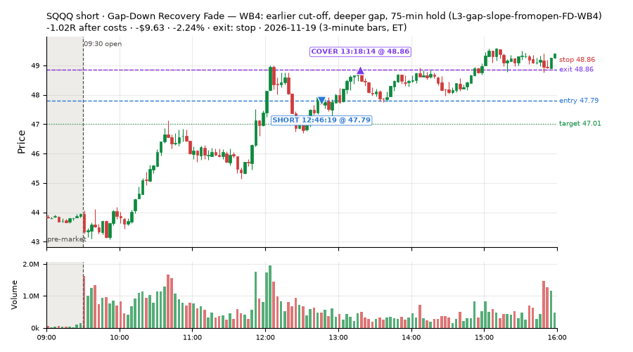
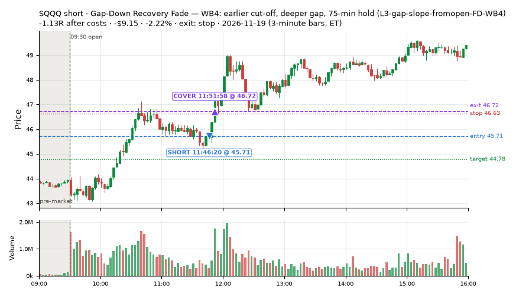

197 trades · win rate 69% · P/L $106.67
PROBATION: no live setup has passed both locked test periods. 10 owner-directed setups added 2026-10-08 (MarcoFlow top 5 + 5 new), untested live. RW6G1 (RW6 + VWAP band guard) added 2026-10-09, probation.

| Symbol | Setup | Side | In | Out | Entry | Exit | Exit reason | % gained | P/L |
|---|---|---|---|---|---|---|---|---|---|
| SQQQ | Gap-Down Recovery Fade — WB4: earlier cut-off, deeper gap, 75-min hold (L3-gap-slope-fromopen-FD-WB4) | short | 12:06 | 12:23 | 48.83 | 47.46 | target | +2.81% | $12.33 |
| SQQQ | Gap-Down Recovery Fade — WB4: earlier cut-off, deeper gap, 75-min hold (L3-gap-slope-fromopen-FD-WB4) | short | 12:16 | 12:23 | 48.69 | 47.48 | target | +2.49% | $10.89 |
| AMKR | Big Loser VWAP Reclaim Fade, Morning, Wide Stop (NS3V1-am-widestop-short) | short | 11:30 | 11:53 | 36.14 | 35.37 | target | +2.14% | $9.26 |
| Symbol | Setup | Side | In | Out | Entry | Exit | Exit reason | % lost | P/L |
|---|---|---|---|---|---|---|---|---|---|
| SQQQ | L3-gap-slope-fromopen-FD-WB4 | short | 12:26 | 13:00 | 46.84 | 48.16 | stop | -2.82% | $-11.88 |
| MRNA | NM-MF3-qqqdn-gapdn-FD | short | 10:21 | 11:27 | 194.70 | 199.97 | stop | -2.71% | $-15.81 |
| MRNA | MF4-h40-open-flowsell | short | 10:21 | 11:27 | 194.70 | 199.97 | stop | -2.71% | $-15.81 |
| SQQQ | L3-gap-slope-fromopen-FD-WB4 | short | 12:46 | 13:18 | 47.79 | 48.86 | stop | -2.24% | $-9.63 |
| SQQQ | L3-gap-slope-fromopen-FD-WB4 | short | 11:46 | 11:51 | 45.71 | 46.72 | stop | -2.22% | $-9.15 |








Signal to fill: median 2s, 90th percentile 3s (197 trades). Bars close each minute; the order follows the bar close.
Best excursion (MFE): median 0.17R; worst (MAE) median 0.18R. 71% of trades never got +0.25R in our favour; 2 reached +1R and still closed at or below 0.
| Symbol | Setup | Best R | Worst R | Closed R |
|---|---|---|---|---|
| SQQQ | L3-gap-slope-fromopen-FD-WB4 | +1.11 | -1.22 | -1.14 |
| MP | MF2-open-rsimidhi-flowsell-FD-WB3 | +0.64 | -1.13 | -1.26 |
| GDXJ | MF2-open-rsimidhi-flowsell-FD-WB3 | +0.52 | -1.18 | -1.19 |
| SQQQ | L3-gap-slope-fromopen-FD-WB4 | +0.72 | -1.21 | -0.92 |
| TSM | MF2-open-rsimidhi-flowsell-FD-WB3 | +0.42 | -1.04 | -1.12 |
| Entry time | Trades | Win | Avg R | P/L |
|---|---|---|---|---|
| 09:50-10:30 | 18 | 78% | -0.01 | $1.84 |
| 10:30-11:30 | 43 | 79% | +0.02 | $40.23 |
| 11:30-13:00 | 82 | 74% | +0.00 | $69.98 |
| 13:00-14:00 | 26 | 54% | -0.19 | $-1.50 |
| 14:00-16:00 | 28 | 43% | -0.05 | $-3.88 |
| Setup | Trades | Win | Avg R after costs | Adj R (net of SPY) | Avg R ex-market (all sessions) | P/L |
|---|---|---|---|---|---|---|
| Stretched Above VWAP Fade (far) (CWT13-vwapstretch-z075-short) | 1.0 | 0% | -1.18 | -2.35 | -0.07 (beta +0.47, n 28) | $-4.50 |
| Failed Prior-Day-Low Break, SPY-Range Regime (short leg) (CWT14-failbrk-pdl-p05-R2A-short) | 129.0 | 83% | +0.05 | -0.08 | -0.02 (beta -0.09, n 267) | $166.70 |
| Generated: Late Choppy Dip Buy (SPY down) (GEN-261023-08-RSIslopelem5p5-VWAPcrossesge8-SMA50dlem1p7-LATE-SPYltm0p5-t1s1-long) | 9.0 | 11% | -0.28 | -0.17 | -0.24 (beta +0.25, n 14) | $-19.96 |
| Generated: PM Upper-Band Fade (weak mkt) (GEN-261026-07-Flow3ge0p56-BBpctge0p98-ADX7le34-PM-BRvwlt0p3-holdtr-short) | 27.0 | 59% | +0.07 | -0.55 | -0.10 (beta -0.54, n 84) | $14.64 |
| Generated: Midday Spike Fade (SPY down) (GEN-261028-07-Z12ge1p6-Eff6le0p034-MID-SPYltm0p25-hold-short) | 2.0 | 50% | +0.25 | -1.23 | -0.31 (beta -0.54, n 16) | $0.59 |
| Gap-Down Recovery Fade — WB4: earlier cut-off, deeper gap, 75-min hold (L3-gap-slope-fromopen-FD-WB4) | 10.0 | 20% | -0.40 | -0.47 | +0.02 (beta +1.76, n 24) | $-43.31 |
| Early Sellers, Mid-High RSI (all day) — WB3: skip rising 20-SMA / gap-ups > 2% + RSI 55-62 + heat -40..-30 + ADV $150M (MF2-open-rsimidhi-flowsell-FD-WB3) | 5.0 | 0% | -1.16 | -0.64 | -0.65 (beta -1.93, n 27) | $-17.23 |
| Early Sellers, Strong Heat (MF4-h40-open-flowsell) owner-directed; holdouts once: Sep-Oct -0.117R n147, Apr-Jun -0.017R n735 | 3.0 | 67% | -0.01 | -0.23 | -0.29 (beta -0.85, n 22) | $-1.97 |
| Gap-Down Capitulation Buy (near-miss) (NM-AR-AM-gapdown-capitulation-long) | 3.0 | 33% | -0.22 | -0.15 | -0.28 (beta +0.78, n 77) | $-6.51 |
| Early Sellers into a Pop (index down, no gap up) (near-miss) (NM-MF3-qqqdn-gapdn-FD) | 4.0 | 25% | -0.23 | -1.11 | -0.12 (beta -0.84, n 60) | $-11.67 |
| Big Loser VWAP Reclaim Fade, Morning, Wide Stop (NS3V1-am-widestop-short) | 4.0 | 100% | +0.38 | +0.10 | -0.19 (beta -0.22, n 86) | $29.90 |
Market direction (SPY, beta 1) accounted for $377.47 of today's $106.67; the rest ($-270.80) came from the setups themselves. Avg R net of SPY: -0.23 (incl. a hedge leg's cost; report only).
21 setups live today. Today: 350 signals, 197 taken, 1 lost because another setup held the symbol (0%). Since 2026-10-12 (29 sessions): 12670 signals, 6335 taken, 809 lost to other setups (6%). Peak open positions today 72 of 800 slots. Earnings blackout removed 209 symbols before scanning.
Simulated playing time (not live): 6314 what-if trades of signals not taken, avg -0.08R, 58% winners; of them 809 lost to another setup (avg -0.18R).
Silent: GEN-261028-01-MACDhge0p12-Since950ATRlem0p25-LATE-SPYgt0p5-holdtr-long, GEN-261027-10-FlowShiftlem1p2-MACDhge0p079-SMA20dge0p59-LUNCH-BRopgt0p65-holdtr-long, GEN-261020-08-FlowShiftlem0p41-Compress6le0p077-OPEN-QQQup-t05s05-long, GEN-261029-04-Ret15mge0p54-RVolDayle0p59-VWAPcrossesle1-LUNCH-SPYgt0p25-hold-long, GEN-261026-01-UpWickge0p59-Since950ATRlem0p61-AM-BRopgt0p5-holdtr-short, LD4-st4-breadthup-t1s05-long, LD8-spy-dip030-breadthturn-spxl-holdtr-long, LD1-ns1-breadthup-t05s1-long, CWT04-backside-lh-a25-short, CWT04-backside-vwaptest-a25-short · Crowded out: NS3-failed-vwap-reclaim-short-FD · Starved: exhaustion_short-FD, MF5-flowsell-vwapup-rsi5hi, NS5-sma50-flush-oversold-long-FD, RW4-ns3-adv150-short-FD, MF2-open-rsimidhi-flowsell
| Prio | Setup | Today sig / taken | Sessions | Signals / taken / trades | Taken/day | Expected/day | Lost to other setups | Lost to (setup n) | Top skip reasons | SIMULATED: not-taken n / avg R / win | Verdict |
|---|---|---|---|---|---|---|---|---|---|---|---|
| 1 | Gap-Down Recovery Fade — WB4: earlier cut-off, deeper gap, 75-min hold L3-gap-slope-fromopen-FD-WB4 | 44 / 10 | 3 | 199 / 24 / 24 | 8.00 | – | 6 | L3-gap-slope-fromopen-FD-WB4 6 | not shortable / shorts off 161, spread / quote / size 7, symbol held by another setup 6 | 174 / -0.02R / 49% | ok 40.0 entries/week |
| 2 | Early Sellers, Mid-High RSI (all day) — WB3: skip rising 20-SMA / gap-ups > 2% + RSI 55-62 + heat -40..-30 + ADV $150M MF2-open-rsimidhi-flowsell-FD-WB3 | 10 / 5 | 3 | 49 / 27 / 27 | 9.00 | – | 2 | CWT14-failbrk-pdl-p05-R2A-long 2, CWT14-failbrk-pdl-p10-long 2 | spread / quote / size 8, other 8, symbol held by another setup 2 | 22 / -0.55R / 27% | ok 45.0 entries/week |
| 3 | Big Gainer Fade, VWAP Band Guard (all day) — WB3: from 11:00, stretched reclaim, liquid, no gap-up runners RW6G1-ns2-up3-vwap2sd-short-FD-WB3 | 0 / 0 | 3 | 9 / 0 / 0 | 0.00 | – | 0 | – | not shortable / shorts off 9 | 9 / +0.70R / 89% | slow no entries yet |
| 4 | Generated: Late Down-Stock Turn Buy (SPY up) GEN-261028-01-MACDhge0p12-Since950ATRlem0p25-LATE-SPYgt0p5-holdtr-long | 0 / 0 | 4 | 0 / 0 / 0 | 0.00 | – | 0 | – | – | 0 / – | silent no signals in 4 session(s); no expected rate on file |
| 5 | Generated: Midday Spike Fade (SPY down) GEN-261028-07-Z12ge1p6-Eff6le0p034-MID-SPYltm0p25-hold-short | 4 / 2 | 4 | 26 / 16 / 16 | 4.00 | – | 0 | – | spread / quote / size 7, other 3 | 10 / +0.31R / 60% | ok 20.0 entries/week |
| 6 | Generated: Late Choppy Dip Buy (SPY down) GEN-261023-08-RSIslopelem5p5-VWAPcrossesge8-SMA50dlem1p7-LATE-SPYltm0p5-t1s1-long | 15 / 9 | 4 | 22 / 14 / 14 | 3.50 | – | 0 | – | spread / quote / size 3, other 3, price through stop/target 2 | 8 / -0.04R / 38% | ok 17.5 entries/week |
| 7 | Generated: Lunch Selling-Flush Buy (extended) GEN-261027-10-FlowShiftlem1p2-MACDhge0p079-SMA20dge0p59-LUNCH-BRopgt0p65-holdtr-long | 0 / 0 | 4 | 0 / 0 / 0 | 0.00 | – | 0 | – | – | 0 / – | silent no signals in 4 session(s); no expected rate on file |
| 8 | Generated: PM Upper-Band Fade (weak mkt) GEN-261026-07-Flow3ge0p56-BBpctge0p98-ADX7le34-PM-BRvwlt0p3-holdtr-short | 41 / 27 | 4 | 164 / 84 / 84 | 21.00 | – | 6 | CWT14-failbrk-pdl-p10-long 3, CWT14-failbrk-pdl-p05-R2A-long 2, NM-AR-AM-gapdown-capitulation-long 1 | per-setup cap 26, other 26, spread / quote / size 15 | 80 / +0.18R / 61% | ok 105.0 entries/week |
| 9 | Generated: Open Failed-Breakdown Short GEN-261026-04-ORBfailDn-Ret15mlem0p55-SMA50dlem0p3-OPEN-BRvwgt0p5-holdtr-short | 0 / 0 | 4 | 14 / 9 / 9 | 2.25 | – | 0 | – | spread / quote / size 4, not shortable / shorts off 1 | 5 / -0.90R / 0% | slow 11.2 entries/week; ~5 weeks to 60 trades |
| 10 | Generated: Open Tight-Range Sell-Off Buy GEN-261020-08-FlowShiftlem0p41-Compress6le0p077-OPEN-QQQup-t05s05-long | 0 / 0 | 4 | 0 / 0 / 0 | 0.00 | – | 0 | – | – | 0 / – | silent no signals in 4 session(s); no expected rate on file |
| 11 | Generated: Lunch Quiet Breakout Buy (SPY up) GEN-261029-04-Ret15mge0p54-RVolDayle0p59-VWAPcrossesle1-LUNCH-SPYgt0p25-hold-long | 0 / 0 | 4 | 0 / 0 / 0 | 0.00 | – | 0 | – | – | 0 / – | silent no signals in 4 session(s); no expected rate on file |
| 12 | Generated: Open VWAP Reclaim Buy (down stock) GEN-261019-01-VWAPxUp-ATRdge3p6-FromPCATRlem0p68-OPEN-BRvwgt0p7-t05s05-long | 0 / 0 | 4 | 17 / 5 / 5 | 1.25 | – | 0 | – | other 7, spread / quote / size 5 | 12 / -1.13R / 0% | slow 6.2 entries/week; ~10 weeks to 60 trades |
| 13 | Failed Prior-Day-Low Break, SPY-Range Regime (long leg) CWT14-failbrk-pdl-p05-R2A-long | 0 / 0 | 14 | 604 / 366 / 366 | 26.14 | – | 9 | RW3S-gapdn-flowsell-short-FD 6, MF4-h40-open-flowsell 1, GEN-261026-07-Flow3ge0p56-BBpctge0p98-ADX7le34-PM-BRvwlt0p3-holdtr-short 1 | spread / quote / size 228, symbol held by another setup 9, broker rejected 1 | 237 / -0.07R / 63% | ok 130.7 entries/week |
| 14 | Failed Prior-Day-Low Break, SPY-Range Regime (short leg) CWT14-failbrk-pdl-p05-R2A-short | 205 / 129 | 14 | 523 / 267 / 267 | 19.07 | – | 69 | CWT14-failbrk-pdl-p10-long 68, CWT14-failbrk-pdl-p10-lowvol-long 8, L3-gap-slope-fromopen-FD-WB4 1 | spread / quote / size 171, symbol held by another setup 69, not shortable / shorts off 16 | 254 / +0.03R / 72% | ok 95.4 entries/week |
| 15 | Generated: Morning Upper-Wick Short (falling) GEN-261026-01-UpWickge0p59-Since950ATRlem0p61-AM-BRopgt0p5-holdtr-short | 0 / 0 | 4 | 0 / 0 / 0 | 0.00 | – | 0 | – | – | 0 / – | silent no signals in 4 session(s); no expected rate on file |
| 16 | Generated: Lunch Choppy RSI Turn Buy GEN-261023-07-RSIslopege9p1-BarRngATRge0p087-VWAPcrossesge8-LUNCH-BRvwgt0p7-hold-long | 0 / 0 | 4 | 57 / 33 / 33 | 8.25 | – | 3 | NS3V1-am-widestop-short 2, exhaustion_short-FD 1 | other 15, spread / quote / size 6, symbol held by another setup 3 | 24 / -0.62R / 12% | ok 41.2 entries/week |
| 17 | Stretched Above VWAP Fade (far) CWT13-vwapstretch-z075-short | 1 / 1 | 29 | 49 / 28 / 28 | 0.97 | – | 0 | – | not shortable / shorts off 10, daily loss cap 4, spread / quote / size 3 | 21 / -0.47R / 29% | slow 4.8 entries/week; ~12 weeks to 60 trades |
| 18 | Early Sellers into a Pop (index down, no gap up) (near-miss) NM-MF3-qqqdn-gapdn-FD | 8 / 4 | 22 | 110 / 60 / 60 | 2.73 | 4.90 | 5 | NM-AR-AM-gapdown-capitulation-long 5, CWT13-vwapstretch-z05-long 1 | spread / quote / size 21, not shortable / shorts off 13, other 11 | 50 / +0.15R / 58% | slow 13.6 entries/week; ~4 weeks to 60 trades |
| 19 | Early Sellers, Strong Heat MF4-h40-open-flowsell | 11 / 3 | 7 | 72 / 22 / 22 | 3.14 | 7.24 | 0 | – | spread / quote / size 40, not shortable / shorts off 7, other 3 | 50 / -0.26R / 50% | ok 15.7 entries/week |
| 20 | Big Loser VWAP Reclaim Fade, Morning, Wide Stop NS3V1-am-widestop-short | 7 / 4 | 20 | 190 / 86 / 86 | 4.30 | 5.30 | 4 | NS3V1-am-widestop-short 4, NM-RWR3-ns3-qqqup-early-short 1, NM-RWN3-ns3-spyup-early-short 1 | spread / quote / size 60, not shortable / shorts off 40, symbol held by another setup 4 | 104 / +0.06R / 64% | ok 21.5 entries/week |
| 21 | Gap-Down Capitulation Buy (near-miss) NM-AR-AM-gapdown-capitulation-long | 4 / 3 | 24 | 126 / 77 / 77 | 3.21 | – | 3 | MF4-h40-open-flowsell 2, CWT14-failbrk-pdl-p05-R2A-short 1 | spread / quote / size 40, other 6, symbol held by another setup 3 | 49 / -0.14R / 45% | ok 16.0 entries/week |
Every trade is attached as a CSV you can open and edit in Excel or Google Sheets. Live page: https://misiti15.github.io/MCF/live/